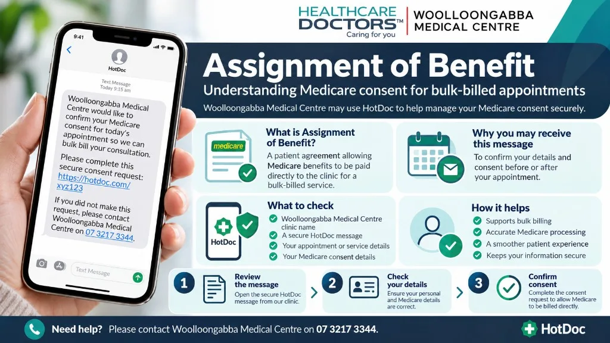

What Assignment of Benefit means
Assignment of Benefit (AOB) is the Medicare process where you agree that the Medicare benefit for an eligible service is paid to the practice. In plain terms, it is the consent that lets bulk billing work for that consultation or service when Medicare rules allow it.
This page explains practice process only. It is not financial or legal advice, and Medicare rules can change.
Why consent is required
Medicare expects patient consent before a bulk billed claim can be lodged for an eligible service. Completing AOB confirms your details and your agreement that the benefit is assigned to the practice for that care.
Woolloongabba Medical Centre provides 100% Medicare bulk billing for standard Medicare-eligible general practice consultations for patients with a valid Medicare card. Some services sit outside standard Medicare billing — see Bulk Billing and Medicare.

How you may receive an AOB request
- After an appointment, or sometimes before, you may receive a consent request.
- Requests may be sent via HotDoc as SMS or email.
- You may also see HotDoc app notifications related to consent.
Please respond promptly so billing for an eligible bulk billed service can be completed. A legitimate request asks you to confirm consent details — it does not ask for banking passwords or account logins.
Call (07) 3217 3344 before completing anything. See Identifying HotDoc scam messages for domain and safety checks.
Assignment of Benefit questions
What does Assignment of Benefit mean?
Assignment of Benefit means you agree that Medicare can pay the benefit for an eligible service directly to the practice, instead of paying you first. That is how bulk billing usually works for Medicare-eligible GP consultations at our clinic.
Why is consent required?
Medicare requires patient consent (Assignment of Benefit) so the practice can claim the Medicare benefit for an eligible bulk billed service. Without consent, the claim pathway for that service may not be completed.
How will I receive an AOB or consent request?
You may receive a short HotDoc SMS or email, or a HotDoc notification, asking you to confirm your details for Medicare consent. Requests can arrive before or after an appointment.
What should I do when I get a request?
Open the legitimate HotDoc link and complete the consent steps promptly. If you are unsure the message is genuine, call the clinic before responding. We will not ask for banking passwords.
This page provides general information about Medicare bulk billing consent at our practice. It is not financial or legal advice. For your personal Medicare entitlements, check with Services Australia or ask reception about our current billing pathways.